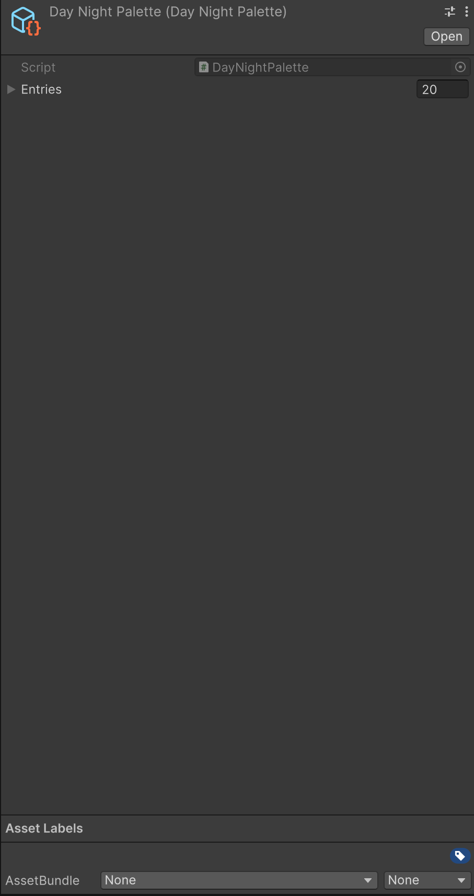
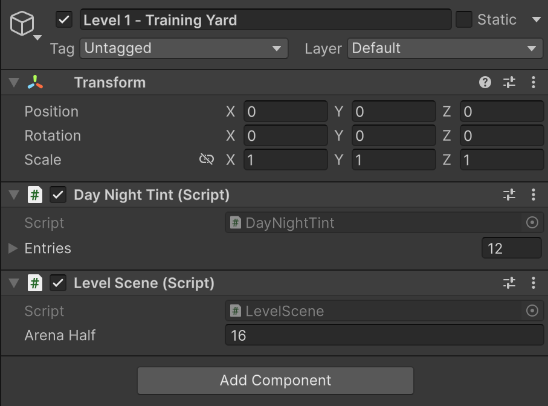
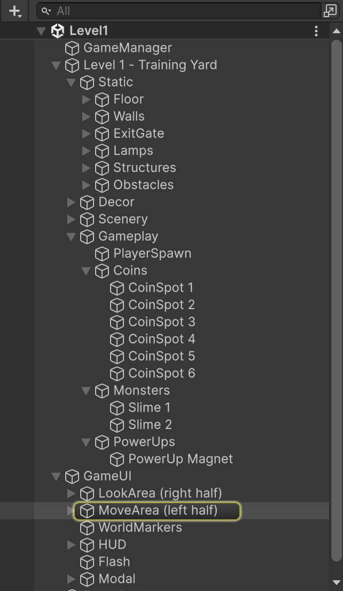
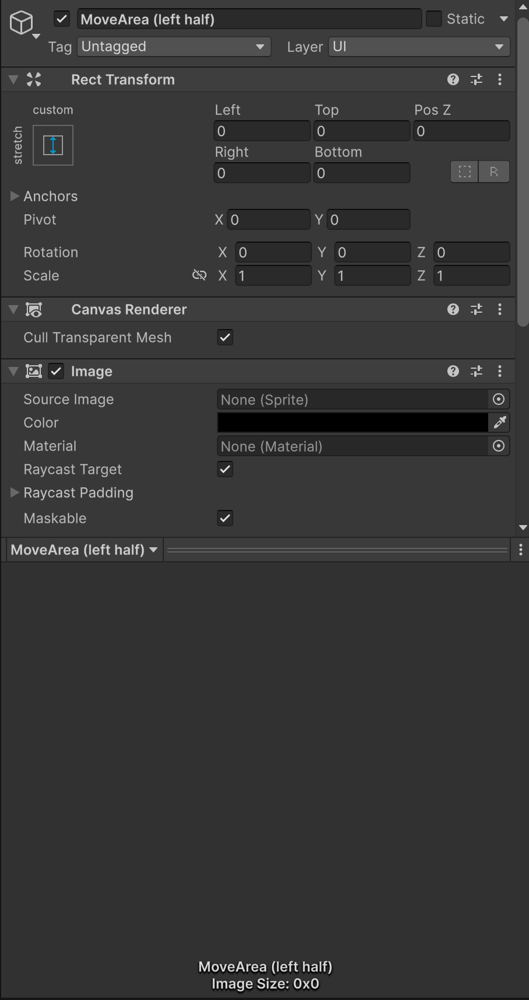
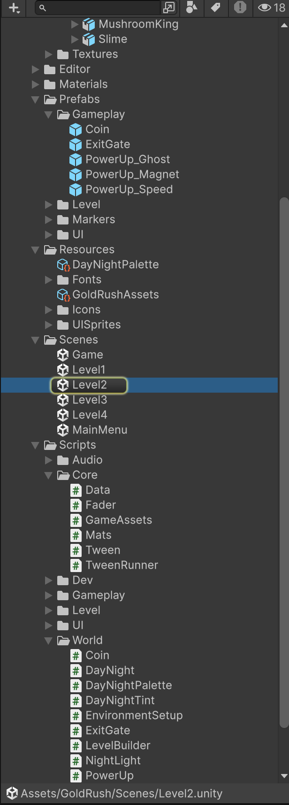
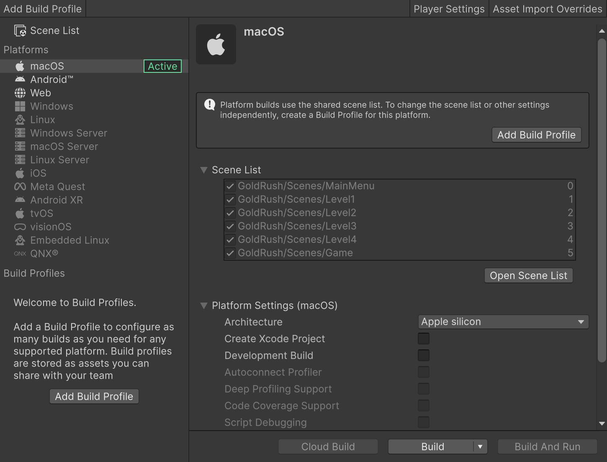
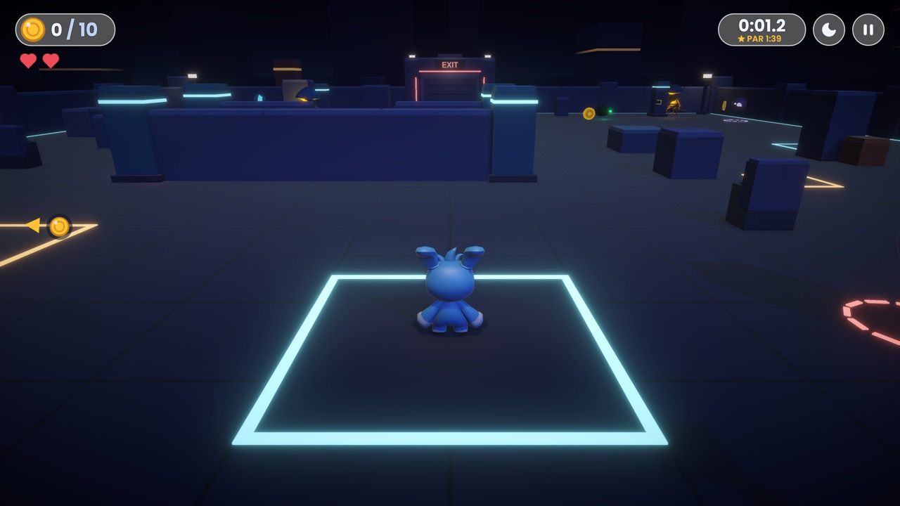

GOLD RUSH · Phase 10
Polish and build
The last package is the complete game. Night changes the colour of the whole level and turns the lamps on. Phones get touch controls (left half = move, right half = look). The music reacts to monsters. Levels 2–4 and the Daily Rush are in. At the end you build the game for PC and Android.
1Import the package
- Make a new, empty Universal 3D project, set up as in Phase 0 (AI Navigation, Input System, Active Input Handling = Both). Or delete the folder
Assets/GoldRushin your project first. - Assets → Import Package → Custom Package… Pick
GoldRush_Phase10_Final.unitypackagefromGoldRush_Export/Packages/. - Keep everything ticked and click Import. Wait for the compile. The Console must show no red errors.
- File → Build Profiles → Scene List. Drag in all six scenes from
Assets/GoldRush/Scenes, in this order:Index Scene 0 MainMenu(the game starts here)1–4 Level1,Level2,Level3,Level45 Game(the Daily Rush) - Open
Assets/GoldRush/Scenes/Level1.unity.
2Check what is new
Check 1: the day/night palette
Select Assets/GoldRush/Resources/DayNightPalette. It is a list of 20 entries. Each entry is a material with a colour by day and a colour by night. The first one is M_Floor: light grey DBDEE6 by day, dark blue 212B52 by night. Glowing materials (lamps, gold) are not in the list: they look the same day and night.

Check 2: Day Night Tint on the level root
Select Level 1 - Training Yard. Next to Level Scene it has a Day Night Tint. When the level starts, it adds the palette to its own list and tints the materials. The main menu has one too, on MenuDiorama.

Check 3: Night Light on the lamps
In the Hierarchy search box, type LampLight. Select one. It has a Light and a Night Light with Night Intensity = 2.4. The light over the gate (Static/ExitGate/LanternLight) has 1.8. They are off by day and fade in at night.

Check 4: the touch areas
Open GameUI. The first two children are LookArea (right half) and MoveArea (left half). They are Images with alpha 0 and Raycast Target on: you can't see them, but they catch touches. Because they are first, every HUD button is drawn on top of them and still gets its click.

Check 5: the Virtual Joystick
Select GameUI › MoveArea (left half). Its Virtual Joystick has Area = MoveArea, Stick Base = Stick, Knob = Stick/Knob, Radius = 120, Group = Stick and Edge = Stick/Ring. LookArea (right half) has a Touch Look Area with its Finger ring. And on GameUI, the Joystick field now points to MoveArea.

Check 6: the music
There is no music object in the scene. AudioFX makes itself ([AudioFX], it stays when scenes change) and plays the clip named music. Select Assets/GoldRush/Resources/GoldRushAssets: its Sounds list has music next to coin, step, hit, win and the others.

Check 7: Levels 2–4 and the Daily Rush
Open Assets/GoldRush/Scenes. There are four new scenes. They work like Level 1: a level root with markers, a GameManager, a GameUI and an EventSystem. The Player and the camera are made by code at Play.
| Scene | Name | Arena | Gold | Monsters | Power-ups | Par |
|---|---|---|---|---|---|---|
| Level2 | Ghost Alley | 40 × 40 m | 8 | 2 Slimes, 1 Ghost | 2 | 1:00 |
| Level3 | King's Vault | 48 × 48 m | 10 | 2 Slimes, 2 Ghosts, 2 Mushroom Kings | 3 | 1:25 |
| Level4 | Gold Fever | 56 × 56 m | 13 | 3 Slimes, 3 Ghosts, 2 Mushroom Kings | 4 | 1:55 |
| Game | Daily Rush | No level root: LevelBuilder builds a new level from code every day (today's date is the seed). | ||||

Check 8: the Build Profiles
Open File → Build Profiles. The Scene List has all six scenes ticked, MainMenu at index 0. Under Platforms you see Windows (Mac: macOS) and Android.

3How it works
Day and night
Press N (or the sun/moon button) and the level turns from day to night in 1.5 seconds. Nothing is loaded. One number does the job: DayNight.Value, from 0 (day) to 1 (night).
Assets/GoldRush/Scripts/World/DayNight.cs (key lines)
public float transitionTime = 1.5f;
public static void Set(bool night, bool instant = false)
{
I.target = night ? 1f : 0f;
if (Save.Data.night != night) { Save.Data.night = night; Save.Persist(); } // remembered everywhere
Changed?.Invoke(night);
}
void Update()
{
value = Mathf.MoveTowards(value, target, Time.unscaledDeltaTime / Mathf.Max(0.05f, transitionTime));
ApplyNow();
}
void ApplyNow()
{
float t = Smooth(value);
RenderSettings.fogColor = Color.Lerp(DayFog, NightFog, t);
sun.intensity = Mathf.Lerp(1.35f, 0.45f, t);
tints[i].mat.SetColor("_BaseColor", Color.Lerp(tints[i].day, tints[i].night, t));
n.light.intensity = n.intensity * t; // a night light
}- One saved setting. Day or night is one choice for the whole game:
Save.Data.night.Set()saves it, andDayNight.Create()reads it when a scene starts. So the menu and every level start the way you left them. - Blending. Every frame,
valuemoves towardstarget.ApplyNow()mixes the day and night colours withColor.Lerp: sky, fog, sun, ambient light, bloom and vignette. - Things sign up.
DayNightTintregisters each material from its list and the palette.NightLightregisters its Light. ThenApplyNow()changes them too. - Copies, not files. DayNightTint tints copies of the materials. If it changed the real material files in Play mode, Unity would save the night colour into your project.
- The button.
DayNightButtoncallsDayNight.Toggle()on a click or the N key, and shows a sun by day and a moon by night.
Touch controls and music
| Script | What it does |
|---|---|
VirtualJoystick | Left half. A stick appears under your thumb. Value is the direction (-1 to 1); under 0.12 counts as 0. Pushed to the edge (more than 0.9) = sprint, and the ring turns orange. The GameManager gives it to the player: Player.joystick = UI.Joystick. |
TouchLookArea | Right half. Adds up the finger movement. The camera calls TouchLookArea.Consume() every frame and turns with it. |
AudioFX.StartMusic() | Plays the music on a loop at volume 0.3. It does not restart when the scene changes. |
AudioFX.SetTension(true) | A monster is chasing you: the music gets a bit faster (pitch 1.07) and louder. |
AudioFX.Duck(amount, seconds) | Makes the music quiet for a moment, so you hear the win or lose sound. |
AudioFX.RefreshMute() | Reads Save.Data.music and Save.Data.sfx (the MUSIC and SOUND toggles). |
4▶ Press Play
- Edit → Clear All PlayerPrefs. Now you play like a new player: 0 gold, only Level 1 open.
- Open
MainMenuand press Play. Music plays. Click the sun/moon button: the menu stage changes colour. - Play Level 1. Press N to switch between day and night. At night the floor and walls are dark blue and the lamps are on. (A new player starts at night.) Let a Slime chase you: the music gets faster.
- Win and click NEXT: Level 2 – Ghost Alley loads with the same HUD, and it keeps your day/night choice.
- Phone test: at the top of the Game view, switch Game to Simulator and pick a phone in landscape. Drag on the left half: the stick appears and the hero walks. Drag on the right half: the camera turns. Switch back to Game when you are done.
- From the Levels screen, open the Daily Rush card: a level built from code.
 Title (night)
Title (night) Level 1 at night
Level 1 at night Level 2
Level 2 Level 4
Level 4
Daily RushApplication.isMobilePlatform is true. So the game does not lock the mouse, and the hint at the start shows the touch controls.5Build for PC and Android
First give your game a name: Edit → Project Settings → Player. Company Name: your name or school. Product Name: Gold Rush. Version: 1.0.
PC
- File → Build Profiles. Under Platforms, click Windows (Mac: macOS). If it is not active, click Switch Platform and wait.
- Player Settings → Resolution and Presentation → Fullscreen Mode =
Fullscreen Window. - Back in Build Profiles, click Build. Make a new folder
Builds/PCnext to theAssetsfolder (not inside it) and select it. - When it is done, open the folder and double-click
Gold Rush.exe(Mac:Gold Rush.app). Press Esc to pause and free the mouse.
Android
- Only once: close Unity. In Unity Hub → Installs, click the gear next to your Unity version → Add modules. Tick Android Build Support with OpenJDK and Android SDK & NDK Tools. Install, then open the project again.
- File → Build Profiles → Android → Switch Platform. This can take a few minutes.
- Player Settings → Resolution and Presentation: Default Orientation
Auto Rotation, tick only Landscape Left and Landscape Right. - Other Settings: Scripting Backend
IL2CPP, Target ArchitecturesARM64. - Click Build and save as
Builds/Android/GoldRush.apk. Copy the file to your phone and open it to install.
6Try it
- Slow sunset. Open
DayNight.cs. Changepublic float transitionTime = 1.5f;to5f. Press Play and press N: the change takes 5 seconds. - A new night colour. Select
Resources/DayNightPalette, open Entries → Element 0 (M_Floor) and set Night to a dark green. Press Play and switch to night: the floor of every level is green. - Brighter lamps. Search
LampLightin the Hierarchy, select all of them and set Night Light → Night Intensity to6. Press Play at night.
7Common problems
| Problem | Fix |
|---|---|
| The sky turns dark, but the floor and walls do not. | The palette must be at Assets/GoldRush/Resources/DayNightPalette.asset (exact name). The level root needs a Day Night Tint. |
| After Play, a material stays dark blue. | Something changed the material file itself. Set its colour back by hand in the Materials folder. |
| Touch does nothing in the Simulator. | Click on the phone screen, not outside it. Check Active Input Handling = Both and the Joystick field of GameUI. |
| No music. | MUSIC must be ON (menu Settings or PAUSE dialog). Turn off Mute Audio in the Game view. |
NEXT or a level card: Scene 'Level2' couldn't be loaded. | Add all six scenes to the Scene List (step 1). |
| Android: Android SDK not found, or the phone game is portrait. | Install the Android modules in Unity Hub and restart Unity. In Player Settings, tick only the two Landscape boxes. |
Well done! You now have the complete game: the menu, four levels and the Daily Rush, the shop, saving, day and night, touch controls and music, as a real PC and Android app.
Now go to the Practicals to build your own levels.
More fixes are on the Troubleshooting page.
Checkpoint package: GoldRush_Phase10_Final.unitypackage (keep this project: you build the Practicals in it).